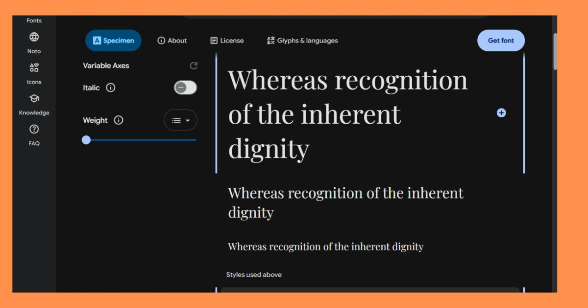
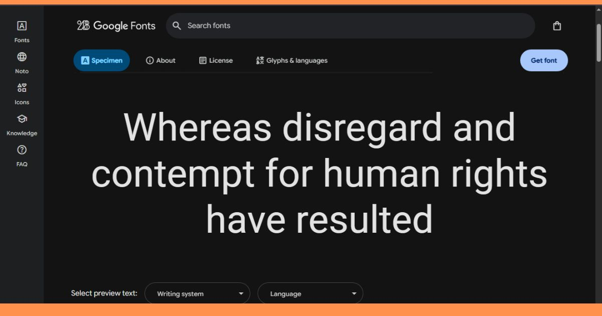
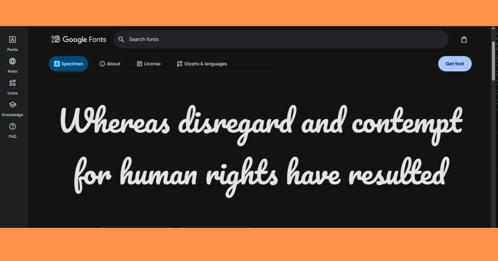
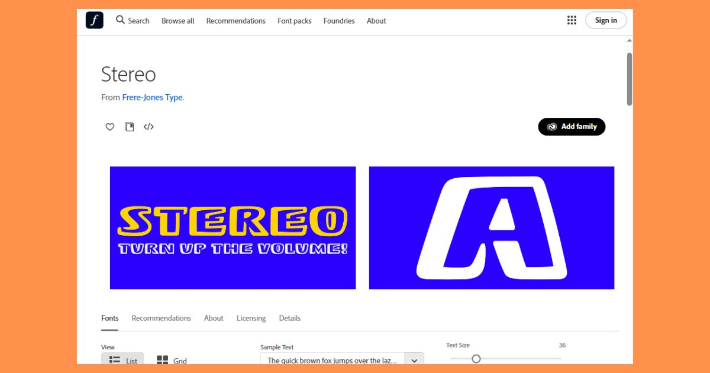
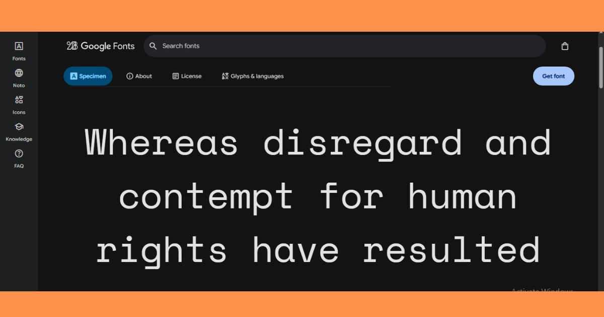

Understanding Different Types of Fonts
Fonts play an important role in design because they affect readability, mood, and a project's overall personality. Different font types are used for different purposes. Some fonts feel formal and traditional, while others feel modern, playful, decorative, or casual. Choosing the right font helps a designer communicate clearly and support the design's message.
Serif Fonts
Serif fonts have small strokes or “feet” at the ends of letters. These fonts often feel traditional, elegant, and professional. Serif fonts are commonly used in books, newspapers, formal invitations, and academic designs.
Example font: Serif Font Link

Sans Serif Fonts
Sans-serif fonts do not have small strokes at the ends of letters. They usually look clean, simple, and modern. Sans-serif fonts are popular for websites, apps, logos, and digital designs because they are easy to read on screens.
Example font: Sans Serif Font Link

Script Fonts
Script fonts are designed to look like handwriting, calligraphy, or cursive lettering. They can feel elegant, personal, creative, or decorative. Script fonts are often used for invitations, logos, headings, and designs that need a personal touch.
Example font: Script Font Link

Display Fonts
Display fonts are decorative fonts designed to attract attention. They are usually used for titles, posters, logos, and headlines rather than long paragraphs. Display fonts can be bold, unusual, themed, or artistic.
Example font: Display Font Link

Monospace Fonts
Monospace fonts give every letter and character the same amount of horizontal space. These fonts are often used for coding, typewriter-style designs, and technical documents. They create a structured and mechanical appearance.
Example font: Monospace Font Link

Conclusion
Understanding font types helps designers choose typography that supports a project's purpose. Serif fonts can feel traditional, sans serif fonts can feel modern, script fonts can feel personal, display fonts can feel bold, and monospace fonts can feel technical. The best font choice depends on the message, audience, and design style.